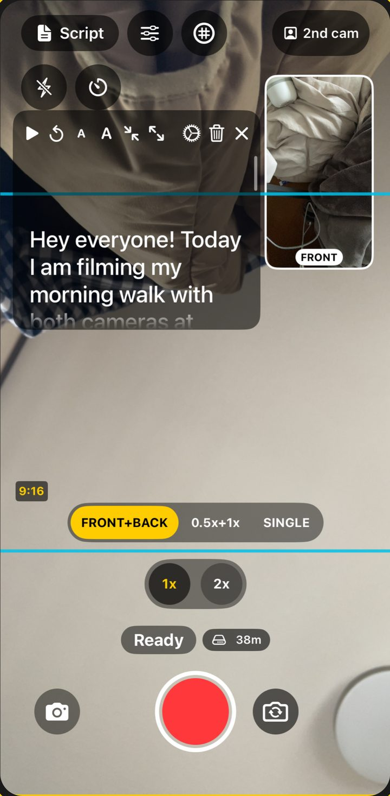

Front + back at once
Both cameras, one tap.
Both cameras record together. Each gives a vertical and a wide 1080p video.
- Guides for 9:16 and 16:9, a grid, 0.5x / 1x / 2x buttons and pinch zoom while recording.
- 0.5x + 1x mode: vertical from the 1x lens and wide from the ultra-wide, in the same take.